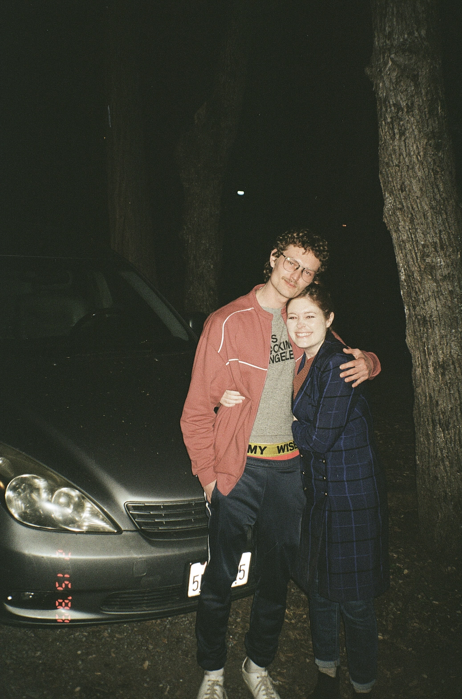

What Happened?
On June 24, 2022, a crew of filmmakers went missing while making a found footage horror film at a timeshare in Camp Nelson, CA. They were there to make a documentary about the unexplained events that had been reported in the area over the past decade. The crew’s final footage was recovered, but it left more questions than answers.
Many believe that something supernatural was involved, while others suspect foul play. What is certain is that their footage revealed strange and terrifying encounters with an unknown force.

The last known image of the crew before they disappeared.